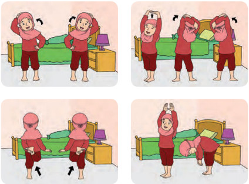

Ayo Beraktivitas
Objectives
Setelah bangun tidur tubuh terasa lemas.
Siti melakukan gerakan kepala, tangan, kaki, dan
badan.
Tubuh Siti sehat dan bugar.
Menjaga kesehatan dan kebugaran tubuh adalah tugas
semua siswa.

Manakah gerakan kepala? Ayo, tirukan!
Manakah gerakan badan? Ayo, tirukan!
Manakah gerakan tangan? Ayo, tirukan!
Manakah gerakan kaki? Ayo, tirukan!